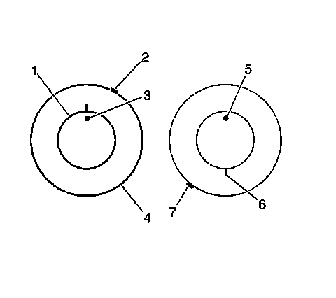

Tire-to-Wheel Match-Mounting (Vectoring)
Tire-to-Wheel Match-Mounting (Vectoring)

Important: After remounting a tire to a wheel or after replacing a tire and/or a wheel, remeasure the tire and wheel assembly runout in order to verify that the amount of runout has been reduced and brought to within tolerances. Ensure that the tire and wheel assembly is properly balanced before reinstalling to the vehicle.
1. Mark the location of the high spot (3) on the tire as determined during the off-vehicle tire and wheel assembly runout measurement.
2. Place a reference mark (2) on the tire sidewall at the location of the valve stem (5).
* Always refer to the valve stem as the 12 o'clock position.
* Refer to the location of the high spot (3) by its clock position on the wheel, relative to the valve stem.
3. Mount the tire and wheel assembly on a tire machine and break down the bead. Do not dismount the tire from the wheel at this time.
4. Rotate the tire 180 degrees on the rim so that the valve stem reference mark (8) is now at the 6 o'clock position in relation to the valve stem (6). You may need to lubricate the bead in order to easily rotate the tire on the wheel.
5. Reinflate the tire and seat the bead properly.
6. Mount the assembly on the tire balancer and remeasure the runout. Mark the new location of the assembly runout high spot on the tire.
7. If the assembly runout has been reduced and is within tolerance, no further steps are necessary. Balance the tire and wheel assembly, then install the assembly to the vehicle. Refer to the following:
* Tire and Wheel Assembly Balancing - Off Vehicle (Tire and Wheel Assembly Balancing - Off Vehicle)
* Tire and Wheel Removal and Installation (Service and Repair)
8. If the clock location of the high spot remained at or near the original clock location of the high spot (7) and the assembly runout has NOT been reduced, the wheel is the major contributor to the assembly runout concern.

9. If the clock location of the high spot has moved, however the assembly runout has NOT been reduced, perform the following steps:
1. If the clock location of the high spot (7) is now at or near a position 180 degrees from the original clock location of the high spot, the tire is the major contributor to the assembly runout concern.
2. If the clock location of the high spot is now in-between the 2 extremes, then both the tire and the wheel are both contributing to the assembly runout concern. Rotate the tire an additional 90 degrees in both the clockwise and the counterclockwise directions to obtain the lowest amount of assembly runout.